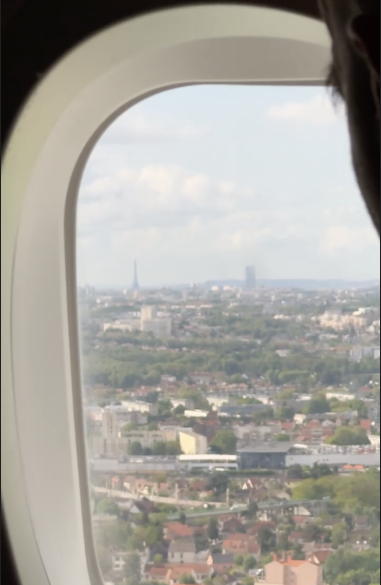

Добро пожаловать в мои заметки о путешествии!
Во Франция я прилетела на прямом рейсе, даже увидела башню на подлете
Немного переживала из-за визы. Поэтому распечатала все брони и обратный билет, но в итоге прошло очень гладко, без лишних вопросов
Потом обсуждали с Юлей (и не только с ней), что французы очень любят русских, и некоторые даже учат русский как иностранный язык. А вот к Диминому еврейскому паспорту были вопросы)…
Доехала на такси до апартаментов, подождала хозяина минут 40 перед дверью, но дальше все было ок